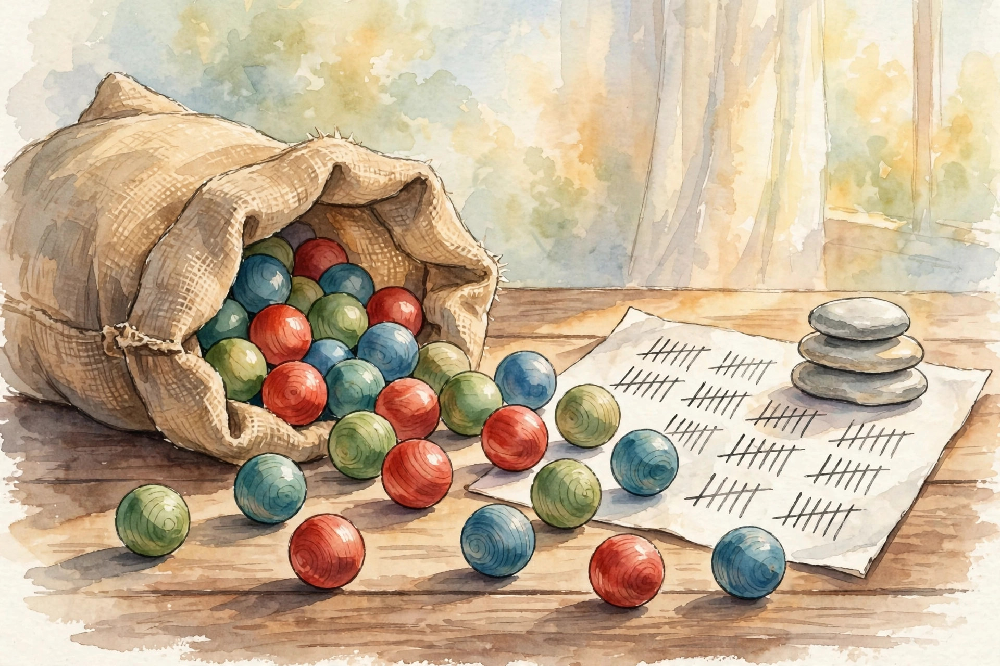

U01 · Probability, measures, and density estimation
A bag of colored balls carries the whole unit: probability against density, support, normalization, joints, sampling, likelihood, entropy, divergence, and the parameters the data cannot see.
Source fact A number, formula, or claim taken directly from the lesson file content/v2/math-genmodels/lessons/u01.md, with its section tag.
Interpretation Companion commentary that connects ideas. It restates, never invents.
Illustration A toy or figure built by this companion for intuition. Numbers here are demonstrative, not lesson numbers.
U01-C03 A pointer to the lesson concept that owns the fact.
No lecture transcript exists for this unit. The lesson is locally authored bridge content, and every leaf carries PLANNED / SOURCE ATTRIBUTION PENDING. This companion narrates the lesson, not a lecture. No source video exists.
Chapter 1 · C01 to C03
Source factU01-C01 The running toy is fixed for the whole lesson: twelve draws from a bag of colored balls. R appears 6 times. G appears 4 times. B appears 2 times. The empirical law is p_hat = (0.500, 0.333, 0.167).

Illustration The twelve draws, imagined as a morning of counting. AI-generated watercolor.
Source factU01-C01 Six of twelve draws are red, so 6/12 = 0.5 is a probability: it sits on the point R, and the three point masses sum to 1. A density is different. The density of a Gaussian N(0,1) at x = 0 reads 0.399, and only the area under the curve is a probability: the area between -0.1 and 0.1 is about 0.080.
Interpretation Probability answers how likely. Density answers how concentrated. A density value above 1 is legal. A probability above 1 is not.
Source factU01-C03 An unnormalized score s(x) = exp(-x^2) integrates to sqrt(pi), not 1. The normalized density is p(x) = s(x) / Z with Z = sqrt(pi). On the toy, scores (6, 4, 2) give Z = 12 and p = (0.500, 0.333, 0.167). The lesson states the rule plainly:
Only the normalized law answers "how likely".
Source factU01-C02 The support is the set where the density is positive: supp(p) = {x : p(x) > 0}. For the toy, supp(p_hat) = {R, G, B}. A uniform law on [0,2] has density 0.5 inside and 0 outside, so a draw of x = 2.8 is impossible under it, not merely unlikely.
Nugget 01 · U01-C03
What happened. Raw scores (6, 4, 2) looked like a bell curve but integrated to sqrt(pi), and the toy scores summed to 12, not 1.
Why it matters. Every probability claim divides by Z. Comparing unnormalized scores across models with different Z lets the worse model win.
Principle. Normalize before you compare. The partition function is the price of every probability statement.
Nugget 02 · U01-C02
What happened. The toy law gives zero mass to a fourth color Y. Under a uniform model on {R, G, B}, p(Y) = 1/3. The models disagree on what is possible.
Why it matters. One data point outside the support sends a log-likelihood to negative infinity and kills the comparison.
Principle. Read the support from the formula before sampling or scoring. Support first, likelihood second.
Chapter 2 · C04 to C05
Source factU01-C05 Add ball size: S for small, L for large. The joint counts over color and size are R: S=4, L=2. G: S=1, L=3. B: S=1, L=1. The joint law is the 3x2 table divided by 12. The marginal p(color) sums each row: (6,4,2)/12. The marginal p(size) sums each column: (0.5, 0.5). The conditional p(size|R) divides the R row by its sum: (0.667, 0.333).
| S | L | row sum | |
|---|---|---|---|
| R | 4/12 = 0.333 | 2/12 = 0.167 | 0.500 |
| G | 1/12 = 0.083 | 3/12 = 0.250 | 0.333 |
| B | 1/12 = 0.083 | 1/12 = 0.083 | 0.167 |
| col sum | 0.500 | 0.500 | 1.000 |
Joint law p(color, size), lesson U01-C05. Marginals are the row and column sums. Conditionals divide a row or column by its sum.
Source factU01-C05 p(S|G) = 1/4 = 0.25. p(G|S) = 1/6 = 0.1667. The two conditionals differ, and mixing them up is the classic error. Color and size are dependent here: p(S|R) = 0.667 differs from p(S) = 0.5.
Source factU01-C04 Ball color is discrete: sums apply. Ball weight is continuous: integrals apply. Treating the 12 draws as discrete gives P(R) = 0.5 exactly. Treating weight as N(40, 25) gives P(weight in [39,41]) as an integral, about 0.310.
Nugget 03 · U01-C05
What happened. One 3x2 table held everything. Summing rows recovered the color law. Dividing a row recovered a conditional.
Why it matters. The joint law answers every question. Marginals throw a variable away. Conditionals zoom into one slice and renormalize.
Principle. Keep one joint. Derive the rest. Never tabulate conditionals that do not come from a single joint.
Chapter 3 · C06 to C07
Source factU01-C06 Sampling runs the law backward: draw u uniform in [0,1], return R if u < 0.5, G if u < 0.833, else B. With seed 0, twelve uniform draws gave counts (R=7, G=3, B=2). The empirical fractions (0.583, 0.250, 0.167) wobble around (0.5, 0.333, 0.167). That wobble is sample noise, not a bug.
Illustration Draw from the toy law. This toy uses fresh browser randomness, not the lesson seed, so its counts differ from the lesson numbers above. It shows the wobble of C06 live.
Press the button to draw.
Source factU01-C07 Fix the twelve draws. The likelihood under the uniform law q is (1/3)^12 = 1.88e-6. Under p_hat it is 0.5^6 x 0.333^4 x 0.167^2 = 5.35e-6. The log-likelihoods are -13.183 and -12.137 nats. The data prefer p_hat by 1.047 nats.
Nugget 04 · U01-C06
What happened. Seed 0 gave (7, 3, 2) instead of the original (6, 4, 2). Same law, different batch.
Why it matters. A sampler with a coding error in its edges returns the wrong law while every other check passes.
Principle. Always histogram the sampler output. Frequencies must match the law within 1/sqrt(n).
Nugget 05 · U01-C07
What happened. The data were fixed. Two candidate laws were scored. p_hat won by 1.047 nats.
Why it matters. Likelihood is p(data | parameters). Data stay fixed. Parameters move. Maximum likelihood picks the parameters that make the observed data least surprising.
Principle. Score parameters, not data. Logs turn products into sums and rescue the arithmetic from underflow.
Chapter 4 · C08 to C09
Source factU01-C08 Put mass 1/12 on each of the twelve draws. That is the empirical distribution p_emp. It is a perfect memory of the data and a terrible model of the world: it assigns zero mass to every unseen outcome. On Bernoulli(0.3) draws with seed 0, n=12 gave 4 heads (empirical 0.333) and n=1200 gave 371 heads (empirical 0.309) against the truth 0.300.
Source factU01-C09 The categorical MLE is the empirical fraction: theta_hat = counts / n = (0.5, 0.333, 0.167). With true law (0.5, 0.3, 0.2), 200 simulated datasets of n=12 (seed 1) gave the MLE of P(R) a mean of 0.499 and standard deviation 0.143. At n=1200 the standard deviation fell to 0.014. Variance scales like 1/n.
Source factU01-C09 With n=1 and one red draw, the MLE says P(R) = 1. The estimate is unbiased in the limit and reckless at small n. A MAP estimate with a Dirichlet prior adds fake counts and shrinks the estimate toward uniform.
Nugget 06 · U01-C08
What happened. Mass 1/12 on each draw reproduced the data exactly and gave zero to everything unseen.
Why it matters. Maximum likelihood on a flexible model recovers the empirical law exactly. That is why pure MLE memorizes.
Principle. The empirical law converges to the truth as n grows, but at any finite n it is spiky and overconfident. Smooth it or hold out data.
Nugget 07 · U01-C09
What happened. The MLE averaged 0.499 with standard deviation 0.143 at n=12, and 0.014 at n=1200.
Why it matters. Bias is systematic error. Variance is wobble across datasets. Consistency means the error vanishes as n grows. MLE is consistent for the categorical but high-variance at small n.
Principle. Estimating 10,000 probabilities from 12 draws gives a desert of zeros. Smooth, shrink, or use a smaller model.
Chapter 5 · C10 to C11
Source factU01-C10 The toy law has entropy H = 1.011 nats. A fair 3-sided law has entropy ln 3 = 1.099 nats. A degenerate law (1, 0, 0) has entropy 0. Entropy measures spread: maximum at uniform, zero at certain. In bits, 1.011 nats = 1.459 bits.
Claude Shannon, whose theory of communication introduced the entropy measure computed in U01-C10. Real photograph, source: Wikimedia Commons (Tekniska museet collection).
Source factU01-C11 Fit q uniform (1/3 each) to the toy p_hat. KL(p||q) = 0.087 nats. Reverse it: KL(q||p) = 0.096 nats. KL is not symmetric. The direction of the fit decides which mistakes hurt: forward KL punishes q for missing data modes, reverse KL punishes q for covering empty space.
Source factU01-C11 Minimizing cross-entropy over q equals minimizing KL(p||q), since H(p) is constant. That identity is the whole of likelihood training.
Nugget 08 · U01-C11
What happened. The same fit scored 0.087 nats one way and 0.096 the other.
Why it matters. Variational inference minimizes reverse KL, so it picks modes. Maximum likelihood minimizes forward KL, so it covers modes. The objective chooses the failure mode.
Principle. Name the KL direction before you trust the fit. And if q puts zero mass where p has mass, KL explodes to infinity: one zero erases the whole comparison.
Chapter 6 · C12
Source factU01-C12 A mixture of two identical Gaussians with weights (0.5, 0.5) and swapped labels gives the same density. The density at x=0 is 0.399 either way. The likelihood of any dataset is identical. Two parameter vectors, one law. The labels are not identifiable. The density is.
Interpretation Symmetries of the parameterization are directions the data cannot see: label swaps in mixtures, sign flips in factor models, rotations in linear latents. Inference about parameters is then meaningless, but prediction can still work.
Source factU01-C12 The lesson warns against reporting the cluster labels of a mixture as discovered truth. Labels are arbitrary. Only the partition structure, up to permutation, is meaningful.
Practice
Source fact The lesson ships a unit assessment: 6 breadth-recall questions, 2 deep ladders of 5 follow-ups, 2 analytical exercises, 1 implementation debug (a sampler with a wrong edges array), and 2 changed-constraint scenarios. Keys live in lessons/keys/keys-u01.md. The lab pointer lists 6 hands-on exercises in labs/lab-u01.md.
Source fact Lesson figures referenced: u01_f01_prob_vs_density.png (mass sums on points, density integrates), u01_f02_support.png (kept draw at 1.2, rejected at 2.8), u01_f03_empirical.png (empirical law approaching truth), u01_f04_kl_asymmetry.png (KL direction), u01_f05_chapter.png (counts to fitted law to scored data). The charts on this page re-plot the lesson numbers above.
Wisdom index